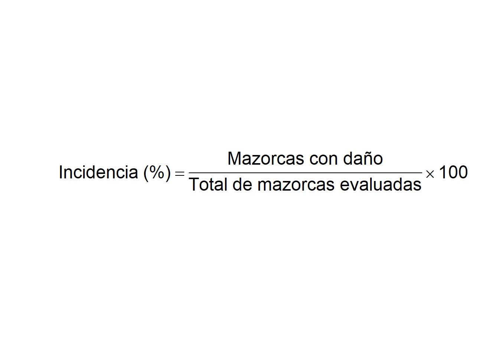
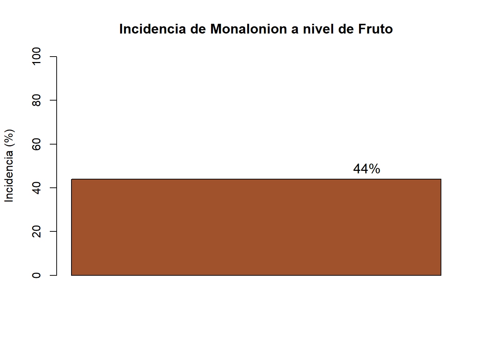
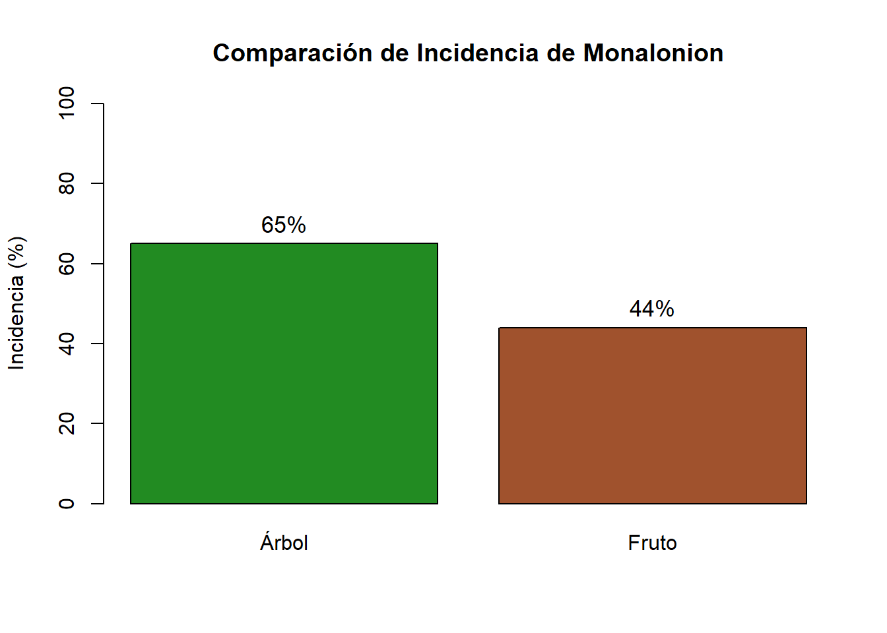
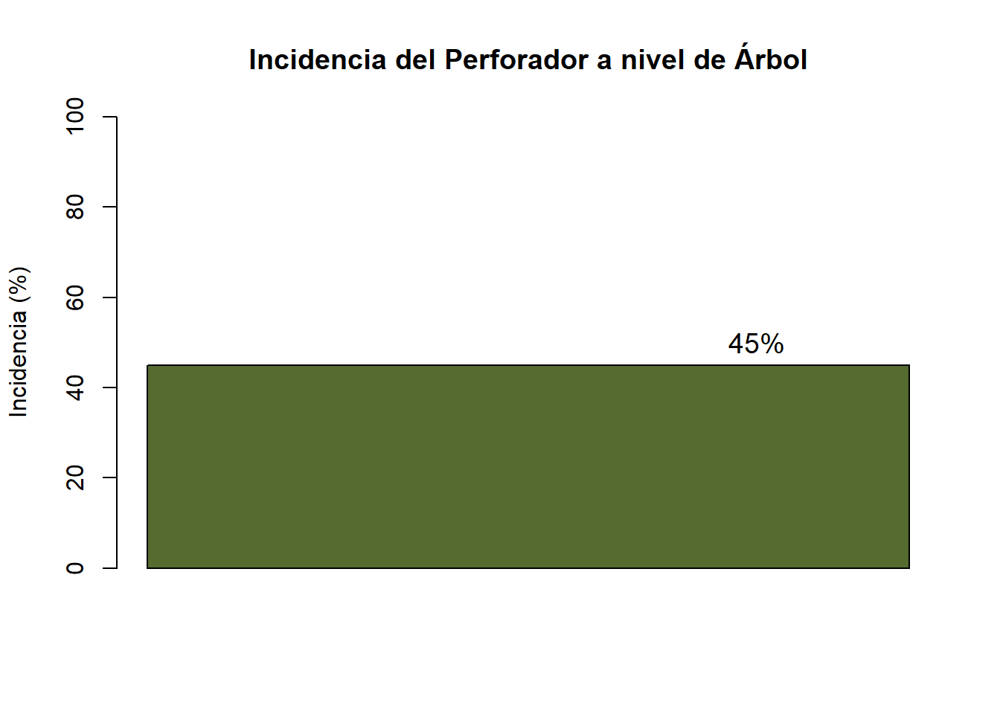

Evaluadores: Castro Cajo Jhan Franco - Villa Tochón Jorge Luis
Estado fenológico del cultivo: Fructificación
Clima al momento: Parcialmente soleado
Altura (msnm): 1412
1. Informacion general de las plagas
Monalonion
Nombre Científico: Monalonion dissimulatum
Clasificación: Hemiptera: Miridae
Nombres Comunes: Chinche del cacao, Monalonion, Chinche chupadora, Mosquilla.
Importancia Económica Es considerada una plaga clave en la producción de cacao. Sus daños directos se originan al alimentarse de la savia y ovipositar en los tejidos tiernos. Sus ataques provocan:
Pérdida total de frutos jóvenes.
Deformación severa de las mazorcas en desarrollo.
Necrosis en brotes vegetativos y chupones, afectando la arquitectura del árbol.
Perforador de la Mazorca
Nombre Científico: Carmenta foraseminis.
Clasificación: Lepidoptera: Sesiidae
Nombres Comunes: Perforador de la mazorca, Carmenta, Pasador del fruto.
Importancia Económica Esta plaga posee un gran impacto económico debido a los hábitos de su larva, que perfora la corteza para alimentarse de los tejidos internos (placenta y semillas). Las consecuencias principales son:
Maduración prematura y caída de los frutos antes de la cosecha.
Facilitación de la entrada de patógenos fúngicos.
Pérdida significativa del peso y la calidad del grano seco.
Trips del Cacao
Nombre Científico: Selenothrips rubrocinctus.
Clasificación: Thysanoptera: Thripidae.
Nombres Comunes: Trips de la banda roja, Trips del cacao.
Importancia Económica Aunque se cataloga como una plaga secundaria, su importancia económica radica en el daño estético y fisiológico. Al raspar y succionar los tejidos de la cáscara, genera:
Lesiones corchosas y bronceadas que deprecian el valor comercial del fruto.
Reducción de la capacidad fotosintética cuando el ataque se desplaza hacia las hojas y brotes jóvenes.
2. Metodologia
La evaluación fitosanitaria se llevó a cabo mediante un muestreo sistemático en campo para cuantificar la presencia y el impacto de las principales plagas del cacao (Monalonion dissimulatum, Carmenta foraseminis y Selenothrips rubrocinctus).
2.1. Unidad de Muestreo y Tamaño de Muestra
Se seleccionó un lote representativo de la parcela, evaluando un total de 20 árboles de cacao. En cada árbol, se realizó un examen minucioso tanto de las estructuras vegetativas (tronco y ramas) como de los órganos reproductivos (mazorcas).
2.2. Variables Evaluadas
Para determinar el estado fitosanitario, se registraron las siguientes variables:
Incidencia a nivel de árbol:
Presencia o ausencia de la plaga o sus daños en la estructura general del árbol (brotes, ramas o tronco).
Incidencia a nivel de fruto:
Conteo del número de mazorcas afectadas frente al total de mazorcas producidas por árbol.
Severidad:
Estimación del área superficial del fruto dañada, utilizando una escala visual de 5 grados (0 a 4).
2.3. Procedimiento de Evaluación por Plaga
Monalonion (Monalonion dissimulatum) Se buscaron ninfas y adultos de color rojizo, así como la presencia de pústulas circulares de color oscuro y lesiones necróticas en brotes tiernos y frutos jóvenes (cherelles).
Perforador de la mazorca (Carmenta foraseminis) La evaluación se centró en la detección de orificios de entrada en las mazorcas, identificables por la acumulación de serrín y excrementos (frass) expulsados por la larva hacia el exterior del fruto.
Trips del cacao (Selenothrips rubrocinctus) Se realizó una inspección visual de la superficie de las mazorcas buscando el característico “bronceado” o “herrumbre”, causado por el raspado del tejido epidérmico por parte de ninfas y adultos.
library(readr)library(googlesheets4)library(here)
here() starts at C:/Users/JORGE LUIS/Downloads/MIPE
library(knitr)library(kableExtra)
Importar datos
install.packages("googlesheets4")
Warning: package 'googlesheets4' is in use and will not be installed
library(googlesheets4)# Autoriza tu Google Account si es necesariogs4_deauth() # si la hoja es pública# o# gs4_auth() # si necesita acceso autenticadourl <-"https://docs.google.com/spreadsheets/d/14wJeyNtYodvILF1R-_JvSierEg64W6Hn-5jPmqMA-X8"datos <-read_sheet(url, sheet ="plagas_cacao") # o por GID
Pústulas agrupadas, manchas visibles pero separadas.
11% - 25%
Daño Moderado
3
Pústulas coalescentes (unidas), formando grandes manchas.
26% - 50%
Daño Fuerte
4
Más de la mitad de la mazorca cubierta de costras/pústulas. Deformación.
> 50%
Daño Severo / Pérdida
Formulas
Los datos fueron recolectados en campo y procesados en el software R (versión 4.5.2) mediante el entorno RStudio. Se utilizaron las siguientes fórmulas para el cálculo de los indicadores:
a) Nivel de incidencia por árbol
# Crear una imagen con la fórmulaplot.new()text(0.5, 0.5,expression( Incidencia~"(%)"==frac("Árboles con daño","Total de árboles" ) %*%100 ),cex =1.5)
b) Nivel de incidencia por fruto
plot.new()text(0.5, 0.5,expression( Incidencia~"(%)"==frac("Mazorcas con daño","Total de mazorcas evaluadas" ) %*%100 ),cex =1.5)

calculo para cada una de las plagas
Incidencia de Monalonion a nivel de árbol
# Incidencia a nivel de árbolincidencia_arbol_monalonion <-65barplot( incidencia_arbol_monalonion,ylim =c(0, 100),ylab ="Incidencia (%)",main ="Incidencia de Monalonion a nivel de Árbol",col ="forestgreen")# Etiqueta con el valortext(x =1,y = incidencia_arbol_monalonion +5,labels =paste0(incidencia_arbol_monalonion, "%"),cex =1.2)
Incidencia de Monalonion dissimulatum a nivel de fruto
# Incidencia a nivel de frutoincidencia_fruto_monalonion <-44barplot( incidencia_fruto_monalonion,ylim =c(0, 100),ylab ="Incidencia (%)",main ="Incidencia de Monalonion a nivel de Fruto",col ="sienna")# Etiqueta con el valortext(x =1,y = incidencia_fruto_monalonion +5,labels =paste0(incidencia_fruto_monalonion, "%"),cex =1.2)

Gráfico de la incidencia a nivel de árbol y fruto
# Vector comparativoincidencias <-c("Árbol"= incidencia_arbol_monalonion,"Fruto"= incidencia_fruto_monalonion)barplot( incidencias,ylim =c(0, 100),ylab ="Incidencia (%)",main ="Comparación de Incidencia de Monalonion",col =c("forestgreen", "sienna"))# Etiquetas de porcentajetext(x =c(0.7, 1.9),y = incidencias +5,labels =paste0(incidencias, "%"),cex =1.1)

Incidencia del perforador a nivel de árbol
# Datos de campo (AJUSTA si tus valores son otros)total_arboles <-20arboles_con_perforador <-9# Incidencia a nivel de árbolincidencia_arbol_perforador <- (arboles_con_perforador / total_arboles) *100incidencia_arbol_perforador
[1] 45
Gráfico
barplot( incidencia_arbol_perforador,ylim =c(0, 100),ylab ="Incidencia (%)",main ="Incidencia del Perforador a nivel de Árbol",col ="darkolivegreen")text(x =1,y = incidencia_arbol_perforador +5,labels =paste0(round(incidencia_arbol_perforador, 1), "%"),cex =1.2)

Incidencia del perforador a nivel de fruto (mazorca)
# Datos de campoarboles <-20mazorcas_por_arbol <-5mazorcas_con_perforador <-18# Total de mazorcas evaluadastotal_mazorcas <- arboles * mazorcas_por_arbol# Incidencia a nivel de frutoincidencia_mazorcas_perforador <- (mazorcas_con_perforador / total_mazorcas) *100incidencia_mazorcas_perforador
[1] 18
Gráfico
barplot( incidencia_mazorcas_perforador,ylim =c(0, 100),ylab ="Incidencia (%)",main ="Incidencia del Perforador a nivel de Fruto",col ="saddlebrown")text(x =1,y = incidencia_mazorcas_perforador +5,labels =paste0(round(incidencia_mazorcas_perforador, 1), "%"),cex =1.2)
# Datos de campo (ejemplo)total_arboles <-20arboles_con_trips <-11# Incidencia a nivel de árbolincidencia_arbol_trips <- (arboles_con_trips / total_arboles) *100incidencia_arbol_trips
[1] 55
Gráfico
barplot( incidencia_arbol_trips,ylim =c(0, 100),ylab ="Incidencia (%)",main ="Incidencia de Trips a nivel de Árbol",col ="darkseagreen")text(x =1,y = incidencia_arbol_trips +5,labels =paste0(round(incidencia_arbol_trips, 1), "%"),cex =1.2)
Incidencia de la plaga Trips a nivel de fruto
# Datos de campoarboles <-20mazorcas_por_arbol <-5mazorcas_con_trips <-30# Total de mazorcas evaluadastotal_mazorcas <- arboles * mazorcas_por_arbol# Incidencia a nivel de frutoincidencia_fruto_trips <- (mazorcas_con_trips / total_mazorcas) *100incidencia_fruto_trips
[1] 30
Gráfico
barplot( incidencia_fruto_trips,ylim =c(0, 100),ylab ="Incidencia (%)",main ="Incidencia de Trips a nivel de Fruto",col ="goldenrod")text(x =1,y = incidencia_fruto_trips +5,labels =paste0(round(incidencia_fruto_trips, 1), "%"),cex =1.2)
Incidencia de las plagas evaluadas
# Crear tabla resumen de incidencia por plagatabla_incidencia <-data.frame(Plaga =c("Monalonion", "Perforador", "Trips"),Incidencia_Arbol =c(65, 45, 55),Incidencia_Fruto =c(44, 18, 30))tabla_incidencia
knitr::kable( tabla_incidencia,col.names =c("Plaga","Incidencia a nivel de árbol (%)","Incidencia a nivel de fruto (%)" ),caption ="Incidencia (%) de plagas evaluadas en el cultivo")
Plaga Incidencia_Arbol Incidencia_Fruto Nivel_Arbol Nivel_Fruto
1 Monalonion 65 44 Muy alta Alta
2 Perforador 45 18 Alta Baja
3 Trips 55 30 Alta Media
justificacion_incidencia <-function(plaga, nivel, porcentaje, organo) {paste0("La plaga ", plaga, " presentó una incidencia ", nivel, " (", porcentaje, "%) a nivel de ", organo, ", lo que indica una presencia significativa que puede afectar el desarrollo del cultivo, ","por lo que se recomienda su monitoreo continuo y la aplicación de estrategias de manejo integrado." )}
Justificacion para cada plaga
Table 2: Justificación Técnica del Estado Fitosanitario por Plaga
Plaga
Incidencia (Árbol)
Justificación Técnica
Recomendación
Monalonion
65% (Muy Alta)
Representa la mayor amenaza; requiere intervención inmediata para evitar la pérdida total de frutos jóvenes y necrosis.
Control urgente
Perforador
45% (Alta)
Riesgo potencial elevado; la alta presencia en árbol sugiere una futura colonización masiva de mazorcas.
Monitoreo preventivo
Trips
55% (Alta)
Presencia significativa; el raspado de tejidos está comprometiendo la calidad comercial externa del fruto.
Manejo cultural
Resultados
Monalonion (Monalonion dissimulatum) Esta plaga representa la mayor amenaza actual para el cultivo. Presentó una incidencia Muy Alta del 65% a nivel de árbol y del 44% en los frutos. Según la escala de severidad, estos valores indican una infestación establecida que requiere intervención inmediata para evitar la deformación de mazorcas y necrosis de brotes.
Perforador de la mazorca (Carmenta foraseminis) El perforador mostró una incidencia del 45% a nivel de árbol (Nivel Alto). Sin embargo, su impacto directo en los frutos evaluados fue menor, con un 18% (Nivel Bajo). Aunque la afectación en mazorcas es baja actualmente, la presencia en los frutos sugiere un riesgo potencial de pérdida y caída prematura de frutos si no se controla la población larval.
Trips (Selenothrips rubrocinctus) Los trips presentan una incidencia Alta a nivel de árbol (55%) y Media en frutos (30%). Las lesiones bronceadas observadas en las mazorcas, aunque se consideran de una plaga secundaria, están alcanzando niveles que podrían comprometer la calidad comercial del grano debido al raspado de los tejidos.